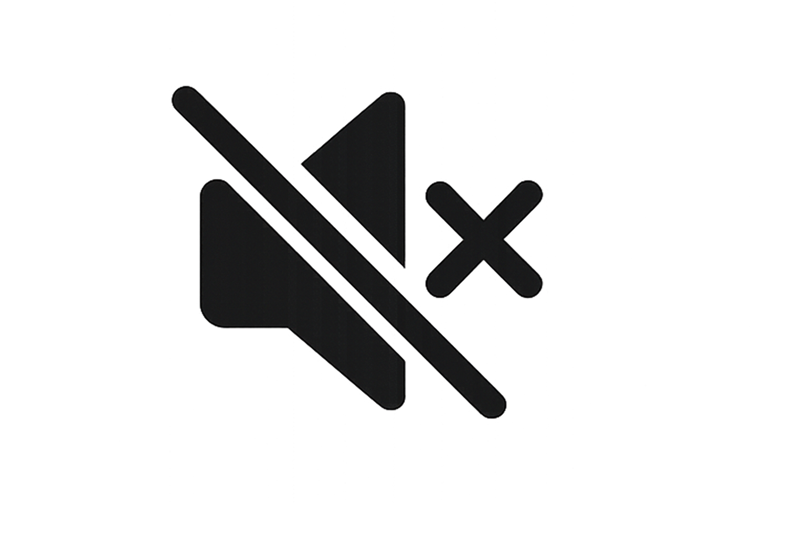

<nav class="navbar navbar-expand-lg fixed-top custom-navbar navbar-dark">
  <div class="container-fluid">
    <div class="nav-audio d-flex align-items-center">
      
    </div>

    <a class="navbar-brand" href="home.html" aria-label="Home">
      
    </a>

    <div id="mini-music-player" class="mini-player" hidden>
      <div class="song-title-container">
        <span id="song-title">Song Name</span>
      </div>

      <div class="progress-container">
        <span id="current-time">0:00</span>
        <label class="visually-hidden" for="progress-bar">Music progress</label>
        <input type="range" id="progress-bar" value="0" min="0" max="100">
        <span id="total-time">0:00</span>
      </div>

      <div class="player-controls">
        <button id="prev-song" type="button" aria-label="Previous song">
          <svg viewBox="0 0 24 24" width="20" height="20" fill="currentColor" aria-hidden="true">
            <path d="M18 4v16l-8-8 8-8zM6 4v16h2V4H6z"/>
          </svg>
        </button>
        <button id="toggle-play" type="button" aria-label="Play music">
          <svg viewBox="0 0 24 24" width="24" height="24" fill="currentColor" aria-hidden="true">
            <path d="M8 5v14l11-7z"/>
          </svg>
        </button>
        <button id="next-song" type="button" aria-label="Next song">
          <svg viewBox="0 0 24 24" width="20" height="20" fill="currentColor" aria-hidden="true">
            <path d="M6 4v16l8-8-8-8zM18 4v16h-2V4h2z"/>
          </svg>
        </button>
      </div>
    </div>

    <button class="navbar-toggler" type="button" data-bs-toggle="collapse" data-bs-target="#mainNav" aria-controls="mainNav" aria-expanded="false" aria-label="Toggle navigation">
      <svg class="navbar-menu-icon" viewBox="0 0 24 24" width="24" height="24" aria-hidden="true">
        <path d="M4 7h16M4 12h16M4 17h16" fill="none" stroke="currentColor" stroke-width="2" stroke-linecap="round"/>
      </svg>
    </button>

    <div class="collapse navbar-collapse justify-content-center" id="mainNav">
      <ul class="navbar-nav">
        <li class="nav-item"><a class="nav-link" href="home.html">Home</a></li>
        <li class="nav-item"><a class="nav-link" href="projects.html">Projects</a></li>
        <li class="nav-item"><a class="nav-link" href="art.html">Art</a></li>
        <li class="nav-item"><a class="nav-link" href="about.html">About Me</a></li>
        <li class="nav-item"><a class="nav-link" href="knowledge.html">Knowledge</a></li>
        <li class="nav-item"><a class="nav-link" href="contact.html">Contact Me</a></li>
      </ul>
    </div>

    <a class="nav-cta" href="contact.html">Hire Me</a>
  </div>
</nav>
